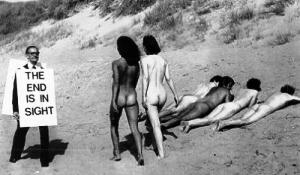
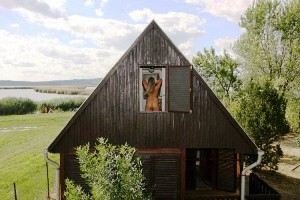

Alsóörs
Alsóörs |
- Pelso ist die
erste bekannte, lateinische Bezeichnung, der Name des Balatons bzw.
Plattensees während der Römerzeit. Sowohl der ungarische
Balaton, als auch der deutsche Plattensee entstammen aus
Pelso
|
|
Badacsonytomaj |
Camping am Ufer des Balatons,
ein Anglerparadies. Zelt- und Wohnwagenplätze, ferner
Apartments in Bungalows werden hier angeboten...
|
|
Balatonakali |
Camping im Dorf:
Camping für FKK Gäste aller Altersklassn am Plattenseeufer:
|
|
Balatonakarattya |
Camping mit FKK /
seit 2015 "bis auf Weiteres" geschlossen
und soll wiedereröffnet werden
|
|
Balatonalmádi |
>>>
|
|
Balatonberény |
 |
Der womöglich niveauvollste
in Ungarn auf 5,5 ha Campinggelände mit Dünen und
Schilfbeständen erfreut sich auf regen Anlauf von
überwiegend
älteren Touristen aus westlichen Ländern
und wächst und wächst. Mobilheime und Wohnwagen, ferner
Zimmer und Apartments in Bungalows werden angeboten. |
|
Balatonfüred |
>>>
|
|
Balatongyörök |
Camping mit Bootsvermietung am Balatonufer, im Süden von
Balatongyörök:
im
Norden von Balatongyörök:
|
|
Balatonszemes |
>>>
>>>
>>>
Vadvirág Camping >>> Arany János utca 110, H-8636
Balatonszemes
Vadvirág Camping >>> Lellei
utca 1, H-8636 Balatonszemes
|
|
Balatonszepezd |
>>>
|
|
Budapest-Rómaifürdő |
Der ältester Campingplatz in Ungarn, eröffnet Anfang der
1960er Jahre, direkt benachbart mit dem Strandbad
. Obwohl am nördlichen Stadtrand gelegen,
die Innenstadt von Budapest ist von hier schnell zu
erreichen mit dem Auto oder mit öffentlichen
Verkehrsmitteln (Bus, S-Bahn). Jahrzehntelang überfüllt von Tschechen,
Polen und DDR-Rucksacktouristen, der Campingplatz ist weiterhin
beliebt bei Touristen aus dem Osten...
|
|
Cserszegtomaj
|
Camping - 3 km entfernt
vom berühmten Thermalsee in Hévíz...
|
|
Délegyháza |
ca. 30
km südlich von Budapest. östlich der Donau. Das offiziell erste
Nudistengelände von Ungarn befindet sich zwischen
mehreren Baggerseen mit mehreren Campingplätzen, wie
u.a.
|
|
Farkasgyepű
|
Traumhafter Luftkurort im Veszprém-Wald, Motel-Camping
Betrieb mit gleicher Adresse, direkt benachbart mit der
Waldgaststätte
in Farkasgyepű
|
|
Fonyód (am
Balaton) |
>>>
|
|
Gárdony |
 |
|
|
Gyenesdiás / bei Hévíz |
Camping-, Zelt-,
Wohnwagenplätze und verschiedene Bungalows werden angeboten
im
|
|
Gyomaendrőd |
Camping-
und Heilbad mit einer medizinischer Abteilung...
|
|
Harkány |
Unsere Ortsbeschreibung von
Das allerbeste, zugleich heißeste Thermalbad in
Ungarn:
Direkt
gegenüber dem Thermalbad befindet sich die
|
|
Hévíz |
- Einstellplätze und Pensionsunterkünfte
werden 200 m südöstlich vom berühmten Thermalsee angeboten
|
|
Keszthely |
nördlich von Keszthely:
südlich von Keszthely:
|
|
Kiskunhalas |
Vielleicht 300
m südlich von Sóstó (dt. Salzsee) von Kiskunhalas in der
Puszta befindet sich das
und in der Nähe das
Unsere Empfehlung ist das 800 m nördlich gelegene
 mit hohem Niveau - so bietet sich in Kiskunhalas ein
idealer Kuraufenthalt zu relativ günstigen Preisen an.
mit hohem Niveau - so bietet sich in Kiskunhalas ein
idealer Kuraufenthalt zu relativ günstigen Preisen an.
|
|
Kiskunmajsa |
Das
, den
und
von Kiskunmajsa findet mn auf einer Homepage.
|
|
Nagyatád |
südwestlich vom Plattensee,
Richtung Kroatien:
|
|
Nemesbük / bei Hévíz |
Ein
abgelegenes, größeres Gartengrundstück für Nudisten, die
es sehr individuell mögen, ist
|
|
Palóznak |
Palóznak liegt östlich von
Balatonfüred am Plattensee:
|
|
Révfülöp |
>>>
|
|
Siófok-Sóstó |
...für Jugendliche:
|
|
Siófok-Szabadfürdő |
>>>
|
|
Szeged-Sziksósfürdő
|
Camping mit FKK
ca. 8 km westlich von
-
|
|
Szentendre - Insel Pap
|
Camping
mit Jugendherberge und Bungalows,
ca. 25 km nördlich von Budapest
|
Szigetköz
(dt.
Kleine Schüttinsel)
|
Von einem Fischrestaurant in Mosonmagyaróvár wird ein
winterfestes Motel und ein Camping in einem Angelparadies
an der Donau verwaltet
Gästehaus für max. 10 Personen und ein Campingplatz in
Kimle-Novákpuszta
|
|
Túrkeve
|
Strand- und
Thermalbad, Unterkunft Angebote von Camping, Hostel
und Apartments findet man auf dieser
|
|
Vonyarcvashegy
|
>>>
|
|
Zalakaros |
Der
von Zalakaros befindet sich
ca. 150 m entfernt vom Thermalbad. Die Gemeinde liegt einen
Katzensprung entfernt von der österreichischen Grenze und sie ist
offensichtlich nur an den 5-Sterne-Hotelgästen interessiert.
Eine andere Antwort finden wir nicht auf die Frage, warum es auf
der Homepage
von Zalakaros kein Wort über den Camping erwähnt wird.
|
|
Zamárdi
|
- Zamárdi liegt in der südlihen Mitte
des Balatons. Hier kann man am weitesten, bis zu einem
Kilometer weit in den See marschieren.
|
alle Angaben ohne Gewähr auf Vollständigkeit und
Aktualität
|
|